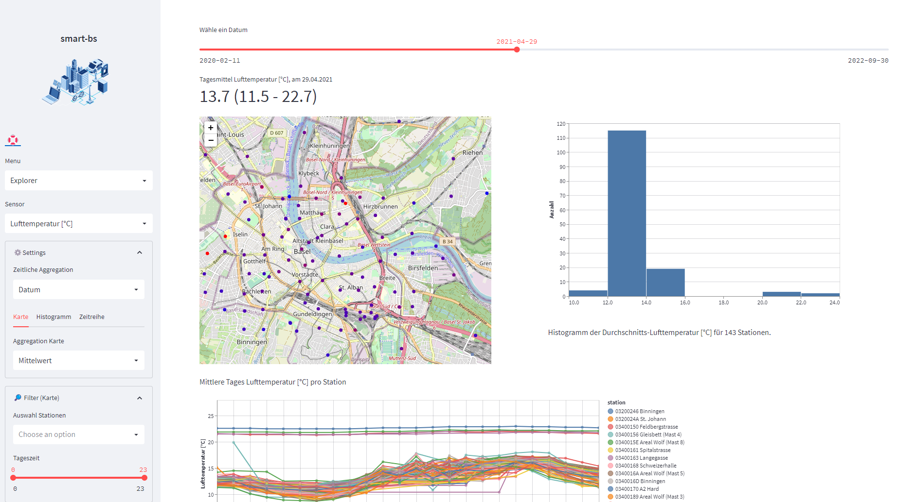
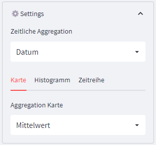
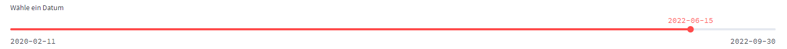
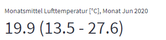

Explorer
Einführung
Dies ist die Applikations-Hauptseite. Sie ist unterteilt in eine Navigations-Seitenleiste (links) und dem Hauptfenster (rechts). Das Dashboard besteht zur Zeit aus drei Figuren: Karte, Histogramm und Zeitreihe. Karte und Histogramm zeigen zeitlich aggregierte Werte, wobei die Karte den Wert pro Standort anzeigt, das Histogramm die Verteilung der WErte aus der Karte. Die Zeitreihe zeigt die Detailwerte als Zeitreihe pro Station, die WErte sind zeitlich nicht oder weniger agggregiert also in der Karte. Zum Beispiel kann auf der Karte das Tagesmitttel jeder Station angezeigt werden, in der Zeitreihe jedoch die Einzelwerte. Wählt man jedoch als Zeitaggregation das Jahr, so zeigt ide Karte das Jahresmittel, die Zeitreihe das Tagesmittel, da mit den Stundenwerten die Grafik überladen würde.

Steuerung
Die Steuerung des Dashboard geschieht mit Ausnahme der Auswahl des Zeitintervalls in der Navigationsleiste.
über die Selectbox Sensorkann der Sensor ausgewählt werden, z.B. TEmperatur, Niederschlag, Feinstaub. Die Auswahl der folgenden Kontrolle-Elemente in ⚙️Settings und 🔎Filter passt sich in der Folge den Einstellungen des Sensors an und es werden nur Optionen angezeigt, die für diesen Sensor möglich sind.
Settings

Die Zeitliche Aggregation definiert das Zeitintervall, mit welchem die Daten auf der Karte aggregiert werden. Über die Selectbox Aggregation Karte lässst sich die Funktion einstellen, mit welcher aggregiert wird: Mittelwert, Minimum, Maximum etc. Ist man an den Einzelwerten interessiert, so können diese in der Zeitreihe eingesehen werden, deren Daten zeitlich nicht oder schwächer als in der Karte aggregiert sind.
Histogramm und Zeitriehe
Für das Histogramm ist aktuell die einzige Einstellung die Sichtbarkeit. Das Histogramm bildet die Werte der Stationen auf der Karte ab und zeigt deren Verteilung. Es Werte wich Minimum, Maximum und häufigster Wert lässt sich einfach eruieren. Dies ist interessant bei Sensoren mit vielen Staitonen, z.B. bei der Luft-Temperatur. Bei Sensoren mit wenigen Stationen ist die Histogramm weniger aussagekräftig und kann ausgeblendet werden.
Die Zeitrihe zeigt den zeitlichen Verlauf der auf der Karte dargestellten Stationen. Bei vielen Stationen mag die Figur verwirrend erschienen, doch gibt diese Darstellung darüber Ausunft, ob es wenig plausible Messwerte gibt. Es gibt für die Zeitreihe zwei Darstellungen: - keine Aggregation der Stationen: jede Station wird als Linie dargestellt - Mittelwert: Mittelwerte aller Stationen - Werteband: Mittelwert mit einenm Werteband Mittelwert +/- Standardabweichung, welches die Streuung der Messwerte veranschaulicht.
Filter
Über die Filtereinstellungen kann die Auswahl der gezeigten Werte eingegrenzt werden. - Auswahl Stationen: Bei keiner Auswahl werden alle Stationen gezeigt, werden WErte ausgewählt, so erscheinen nur die Messerte dieser Stationen auf den Grafiken. - Tageszeit: Es können die Stundenwerte, die in die Berechnung eingehen, definiert werden. So lässt sich zum Beispiel einfach eine tägliche oder nächtliche Jahres-Durchschnittstemperatur oder Lärmpegel für eine Station bestimmen.
Auswahl Zeitintervall
Im Kopfbereich des Hauptfensters lässt sich über den Slider ein Zeitintervall auswählen. Die Länge des Zeitintintervalls hängt von der Wahl der Zeitlichen Aggregation in den Settings ab: Ist dort DAtum eingestellt, so können im Slider alle Tage mit Messwerten ausgewählt werden, ist die Aggreagation auf Woche eingestellt, so lassen sich im Slider die Kalenderwochen auswählen etc. Die Grafiken passen sich automatisch der neuen Wahl an.

Ausgabe numerisch Der Durschnitt und die Extrama (Minimum, Maximum) der auf der KArte darbestellten Werte werden über der Karte als fette Zahlen angezeigt. Die Extremwerte beziehen sich auf die pro Station aggregierten Werte. Der obere Wert ist also das Maximum der angezeigten Mittelwerte aller Stationen, nicht der höchste Wert im der gewählten Intervall. Möchte man den höchsten Wert wissen, so kann man als Aggregation die Maximalwerte auswählen. Damit wird der obere Wert zum Maximum aller Maxima pro Station, was dem Maximum aller Werte entspricht.
